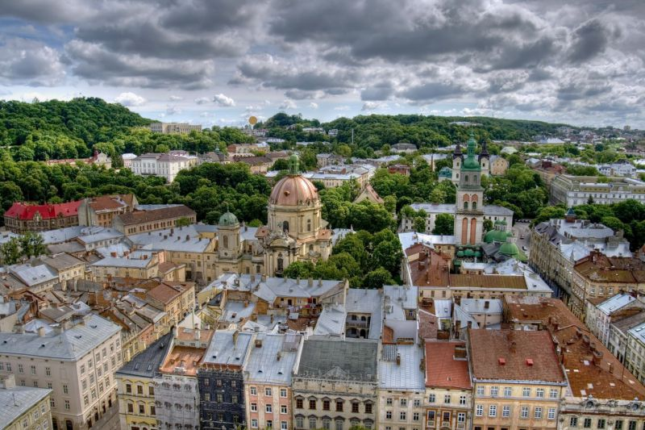

Назва «Львів» дана місту на честь князя Лева Даниловича, сина засновника Львова Данила Галицького. Упродовж своєї історії Львів жодного разу не змінював назви.
Розповсюдженою є назва «Місто Лева». Час від часу вживаються такі порівняння, назви та словосполучення, як «місто левів», «місто сплячих левів», «Королівське місто», «Перлина корони Європи», «Місто-музей», «столиця Галичини», «маленький Париж», «маленький Відень», «український П'ємонт», «Бандерштадт», «культурна столиця України» та інші.
Перша письмова згадка про Львів міститься у Галицько-
Кожен п’ятий у Львові - студент. Зокрема, у місті налічується близько 170 тис. студентів. А також 26 університетів. Найбільшими є ЛНУ імені Івана Франка та «Львівська Політехніка». Аеропорт імені короля Данила Галицького - один з найбільших у Східній Європі. Розташований за 6 км від центру міста. У 2012 році відкрито новий термінал та продовжено злітно-посадкову смугу, яка дає змогу приймати великі літаки. Пропускна здатність аеропорту складає 2 тис. пасажирів на годину. Гасло міста – «Львів відкритий для світу». Логотип складається зі стилізованих різнокольорових зображень дзвіниць центральних храмів міста та вежі міської ратуші (зліва — направо): дзвіниця Вірменського собору, вежа Корнякта, вежа міської Ратуші, вежа Латинської катедри, дзвіниця монастиря Бернардинів. Найвища споруда у Львові – костел Ольги і Єлизавети, висота його вежі – 88 метрів. З цього літа на неї можна вільно підніматися та оглядати панораму міста. У Львові зародилась найбільша книжкова подія року – Форум видавців. Цього річ йому виповнився ХХІ рік. З кінця 90-х років Львів внесено у перелік світової спадщини ЮНЕСКО, у місті збереглось найбільше в Україні (понад 55%) пам’яток історії та архітектури – 2 500. У Львові з’явився перший у світі Музей сала, де розміщено найбільше в світі серце із сала завтовшки 55 та заввишки 85 см. Ідея його створення належить львівським рестораторам. Цей музейний експонат у червні 2011 року отримав відзнаку Книги рекордів України – «Найбільше в світі серце з сала». У Львові розвинений кластер ІТ. В галузі працює близько 11 тис. ІТшників. Їх число помітно зросло з початком подій на Сході України. Львівські ІТшники розробили додаток Skype для мобільного телефона. У Львові створюють програмне забезпечення для багатьох голлівудських фільмів: наприклад, спецефекти для «Спайдермена», «Гаррі Поттера», «Халка» та інших фільмів зробили тут. Хоча каву у Львові п’ють дуже давно, пам’ятник людині, що завезла її у XVII столітті до Європи та України, з’явився у місті зовсім недавно. Вшанували Юрія Кульчицького статуєю з бронзи, яку в жовтні 2013 року встановили у сквері навпроти лялькового театру. Восени 2014 року у Львові на площі Коліївщини встановили велогенератор: крутячи педалі, можна заряджати смартфони та інші гаджети. До речі, сама площа Коліївщини вважається найменшою міською площею в Україні. У Львові є будинок-кросворд та будинок з гігантським портретом Шевченка.